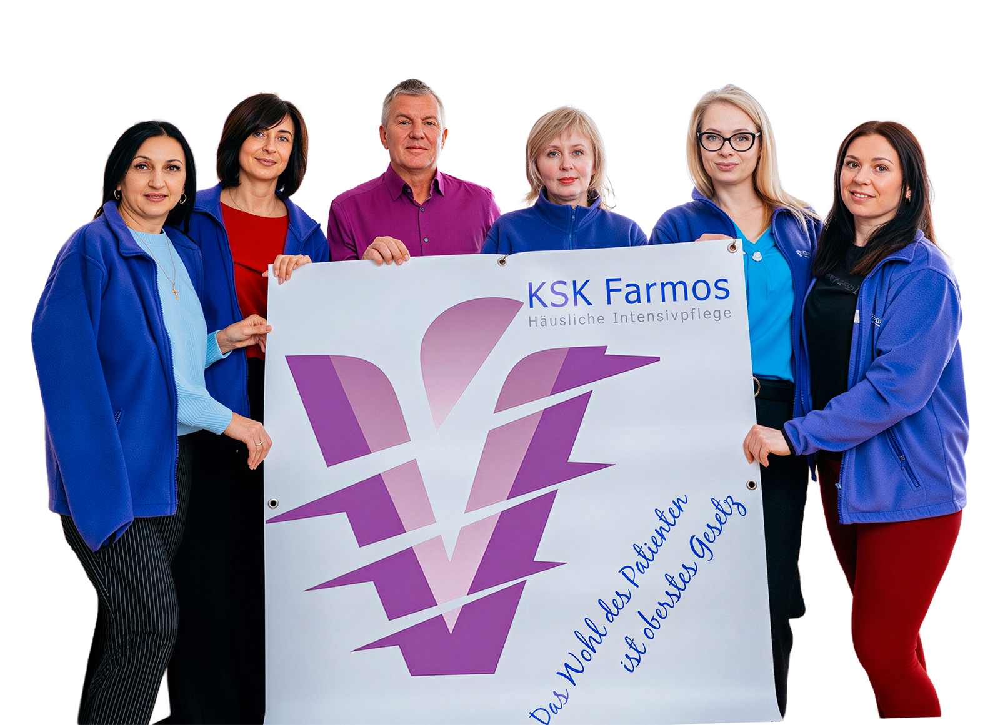
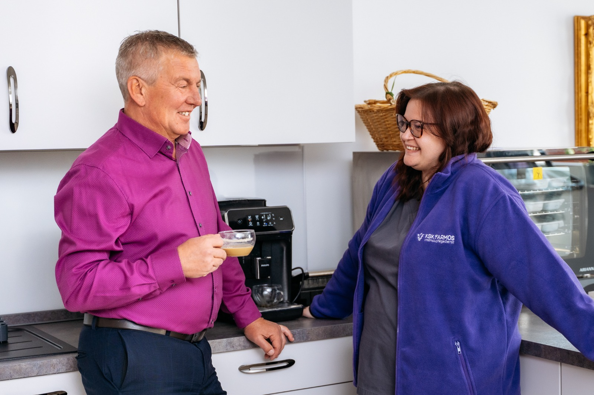
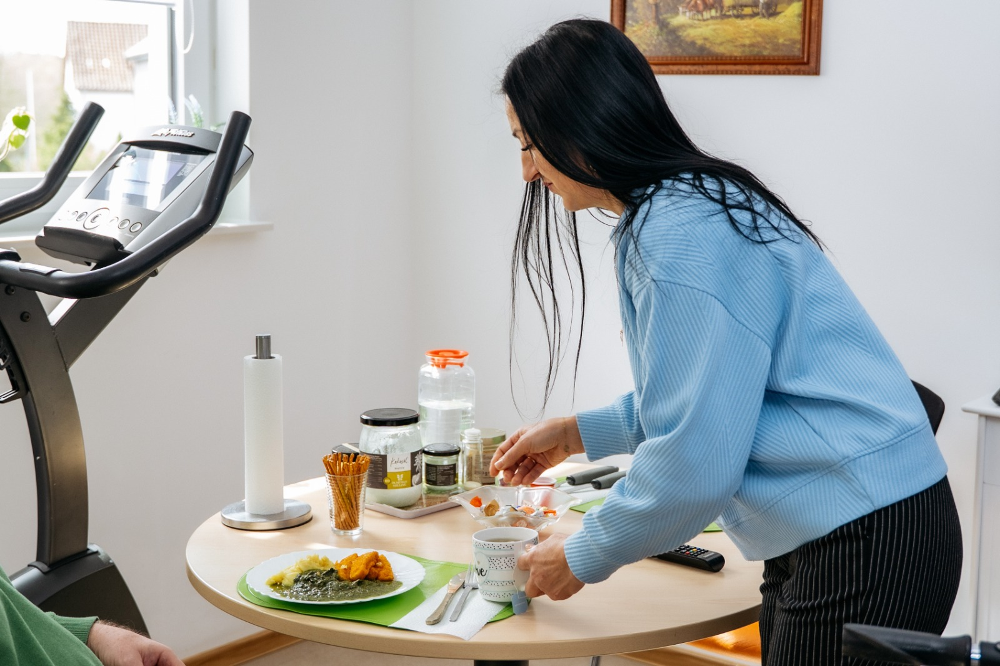

Erfahrung und Fürsorge
seit 2013
Seit 2013 versorgen wir Menschen mit schweren Erkrankungen — professionell, menschlich und verlässlich.

Aus Überzeugung gegründet
Der ambulante Intensivpflegedienst KSK Farmos wurde 2013 von Viktor Beresnev in Volkmarsen gegründet — mit einem klaren Ziel: Menschen mit schweren Erkrankungen ein würdiges und selbstbestimmtes Leben zu ermöglichen.
Seitdem versorgen wir Patienten hessenweit — im eigenen Zuhause oder in unserer Einrichtung in Kassel.

Woran wir uns orientieren
Lebensprozesse unterstützen
Wir fördern die Eigenständigkeit und begleiten natürliche Prozesse.
Körperfunktionen erhalten
Gezielte Pflege zur Erhaltung physischer Fähigkeiten.
Krankheit bewältigen
Monitoring des Krankheitsverlaufs und sofortige Intervention.
Wohlbefinden fördern
Das emotionale und physische Wohlbefinden des Patienten steht im Mittelpunkt.
Komplikationen vorbeugen
Präventive Maßnahmen und lückenlose Überwachung.
Die Menschen hinter KSK Farmos
Olga Korp
Pflegedienstleitung (PDL)
Verantwortlich für die fachliche Leitung und Qualitätssicherung aller Pflegemaßnahmen.
Lidia Zimmermann
Stellvertretende PDL
Koordination der Pflegeteams und direkte Ansprechpartnerin für Angehörige.
Unser Pflegeteam
Examinierte Fachkräfte mit fundierter Erfahrung in der Intensivpflege.
Rund 30 Mitarbeiter — qualifiziert, empathisch und zuverlässig im Einsatz.
Unsere Partner
- Hausärzte und Fachärzte in ganz Hessen
- Physiotherapeuten
- Logopäden
- Ergotherapeuten
- Medizintechnik-Unternehmen
- Kranken-, Pflege- und Sozialkassen

Kostenlose Beratung
Wir beraten Sie persönlich — kostenlos und unverbindlich.
Lassen Sie uns sprechen